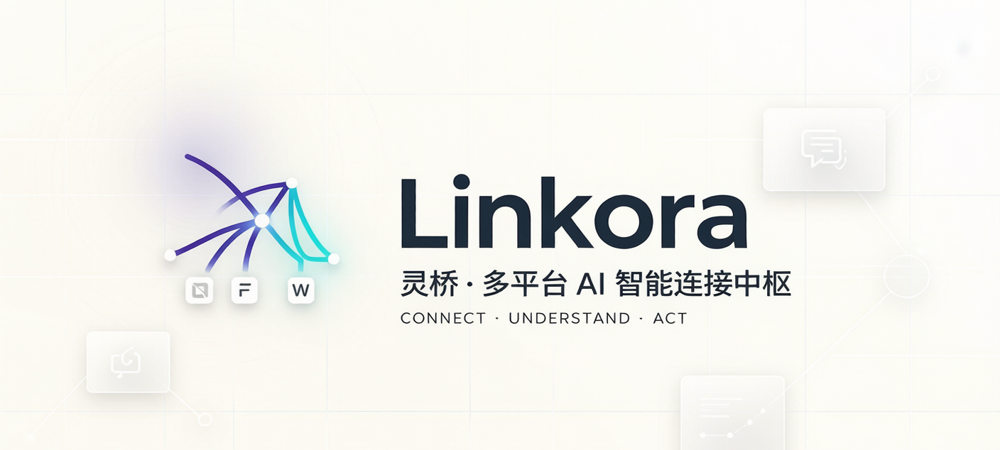

企业知识 RAG
读得懂公司的文档和历史聊天记录。需要的时候把相关资料调出来放进对话，给出的回答都有出处、能溯源。


核心能力
不是只会陪聊的机器人。灵桥把知识、工具和规则都揉进同一段对话，该找真人时也不抢话。
读得懂公司的文档和历史聊天记录。需要的时候把相关资料调出来放进对话，给出的回答都有出处、能溯源。
一键开启「只依据知识库作答」：回答 100% 来自检索内容、零编造，知识库没收录就直说。制度问答、产品资料这类对出处要求高的场景，用它最稳。
一张统一的能力清单，目前内置 49 个：查考勤、建待办、发通知、搜消息、读日报周报、查别人转发的审批流程……它是真去办事，不是只动嘴给建议。
先把消息分个类，41 种意图里能套规则的就走固定流程，只有拿不准的才交给大模型。
要改数据先确认，敏感操作可审批。双重把关，保证同事在说话时 AI 绝不插嘴。
19 个页面、一百八十多个接口。会话、知识库、工具、审批、实时摘要、安全防护，全在浏览器里看得清、调得了。
工作原理
从收到消息到发出回复，每一步都看得见、能插手，全程在管理台留了记录。
从办公软件把消息拉回来，按账号分开存好
能套规则的走固定流程，拿不准的才交给大模型
查资料、调工具，把事实补齐
先过一道门控筛掉不用回的，再交给大模型，省 token
发出前再核一遍，原样回到原来的对话里
多平台
钉钉、飞书、企业微信各自适配，数据库和轮询各管各的——数据物理隔离，互不打扰。
对接钉钉机器人和工作通知，单聊、群聊、审批流都支持。
独立数据库接上飞书机器人和通讯录，查资料和调工具都顺溜。
独立数据库企业微信里收发消息，内部协作和私有部署都兜得住。
独立数据库人工接管 · 门控双重校验
这是灵桥和那些爱抢话的机器人最大的不同。两层把关，只要同事接手了，AI 就不再重复回、也不再白烧 token。
快速开始
克隆代码、填好配置、一条命令启动。数据全在你自己的机器或内网里。
# 1. 获取代码
git clone https://github.com/0x0021/Linkora.git
cd Linkora
# 2. 安装依赖（Python ≥ 3.14）
python -m venv .venv && source .venv/bin/activate
pip install -r requirements.lock
# 3. 配置平台凭证
cp config.yaml.example config.yaml # 填入钉钉/飞书/企微信息
# 4. 启动（双进程：web + worker）
.venv/bin/python scripts/run_linkora.py文档
架构、设计、工具、接口、知识库、意图、部署和开发——做二次开发要查的，这里都有。